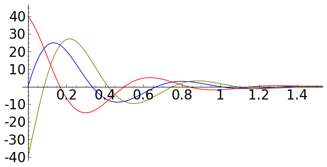
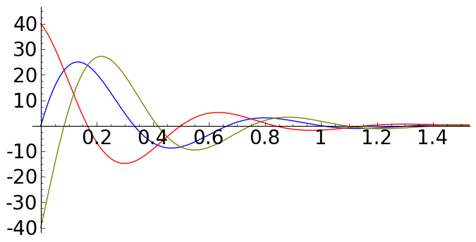

Wykresy¶
Wykresy funkcji¶
Jednym z głównych powodów do nauki i używania algebry komputerowej jest możliwość wizualizacji wyników naszych obliczeń. W najprostszej formie będą to wykresy funkcji, choć za pomocą Sage możemy tworzyć wymyślne trójwymiarowe wykresy, animacje, czy nieco bardziej abstrakcyjne reprezentacje wyników. Ponadto każdy z takich wykresów może być interaktywny. Poniżej kilka przykładów
Prosty, dwuwymiarowy wykres
sage: var('x')
sage: plot(abs(x))
Nieco bardziej skomplikowany wykres
sage: g(x) = sin(x) + cos(x)*x^2 + sqrt(x)
sage: gp = g.plot(xmin=0, xmax=20, ymin=-200, ymax=200,
... rgbcolor=(0,0,0), thickness=2, fill=True,
... fillcolor='gold' , legend_label='g(x)')
sage: taylorp = sum([g.taylor(x,0,i).plot(linestyle='--',
... xmin=0, xmax=20, rgbcolor=(i/.4,i/4.,i/4.),
... legend_label='rozwiniecie rzedu %d' % i)
... for i in xrange(4)])
sage: p = gp + taylorp
sage: p.axes_labels(['x','g(x)'])
sage: p.show()
Można też trochę się pobawić...
sage: (circle((1,1),1, fill=True, facecolor='white') +
sage: circle((1,2),.8, fill=True, facecolor='white') +
sage: circle((1,3),.6, fill=True, facecolor='white') +
sage: circle((1-0.2,3),.061, fill=True, facecolor='black') +
sage: circle((1+0.2,3),.061, fill=True, facecolor='black') +
sage: circle((1,1),.061, fill=True, facecolor='black') +
sage: circle((1,1-0.5),.06, fill=True, facecolor='black') +
sage: circle((1,2),.06, fill=True, facecolor='black') +
sage: circle((1,2-0.5),.06, fill=True, facecolor='black')
sage: ).show(figsize=[4,4] , axes=False, frame=False)
czy też
sage: lk = [circle((random(),random()), random()/20,
... fill=True, edgecolor=(random(), random(), random()),
... facecolor=(random(), random(), random()))
... for i in xrange(500)]
sage: show(sum(lk), axes=False, frame=True )
Bardzo łatwo tworzy się również wykresy ”trójwymiarowe”, tzn. wykresy funkcji dwóch zmiennych
sage: def f(x,y):
... return math.sin(y*y+x*x)/math.sqrt(x*x+y*y+.0001)
sage: P = plot3d(f,(-3,3),(-3,3), adaptive=True,
... color=rainbow(60, 'rgbtuple'),
... max_bend=.1, max_depth=15)
sage: P.show()
czy też korzystając z Pythonowych funkcji lambda
sage: plot3d(lambda x, y: x^2 + sin(y^2), (-2,2), (-2,2), adaptive=True,
... color=['red','yellow'])
To tyle jeżeli chodzi o przykłady. Teraz po kolei...
Funkcje plot() i show()¶
Najczęściej będziemy używać Sage do tworzenia prostych wykresów wizualizujących wykonywane obliczenia. Do tego wykorzystamy komendy plot() oraz show(). Pomimo, że obie komendy mają tylko niewielką liczbę parametrów którymi możemy dostrajać wykres, do prostych wizualizacji powinno to nam wystarczyć w zupełności (kiedy tak naprawdę chcemy zobaczyć jak wygląda dana funkcja, czy na szybko zobaczyć gdzie leżą jej miejsca zerowe lub ekstrema...). Do demonstracji użyjemy dwóch funkcji
oraz ich różnicy \(h(x) = p(x) - r(x)\).
sage: # funkcje symboliczne
sage: p(x) = 40 * e^(-pi*x) * sin(3*pi*x)
sage: r(x) = 40 * e^(-pi*x) * cos(3*pi*x)
sage: h(x) = (p - r)
plot()¶
Funkcja plot() zainicjuje obiekt Sage o typie sage.plot.plot.Graphics (możecie to sprawdzić sami).
Składnia funkcji plot to
plot(f, (xmin, xmax), opcje)
gdzie
- f to funkcja lub lista funkcji (lub wyrażeń symbolicznych) do wykreślenia,
- (xmin, xmax) to zakres argumentu funkcji na wykresie (zakres osi \(x\)),
- opcje to różne opcje, którymi można dostosować wykres do żądanego wyglądu.
Tylko pierwszy parametr funkcji plot(), czyli f jest obowiązkowy (plot() musi wiedzieć co ma rysować), resztajest opcjonalna. Jeżeli krotka (xmin, xmax) nie zostanie podana, plot() przybierze domyślne wartości
- xmin = -1
- xmax = 1
Przykładowym opcjonalnym parametrem może być rgbcolor, który powoduje zmianę domyślnego koloru wykresu (niebieskiego) na inny, np. czerwony
sage: plot(sin, rgbcolor="red")
Możemy podawać zarówno nazwy kolorów (w języku angielskim) lecz w ograniczonym zakresie, lub dowolny kolor przestrzeni barw RGB (Red Green Blue). A oto kilka możliwych kolorów i ich reprezentacje RGB:
- "red" : (1.0,0.0,0.0),
- "orange": (1.0,0.5,0.0),
- "yellow": (1.0,1.0,0.0),
- "green" : (0.0,1.0,0.0),
- "blue" : (0.0,0.0,1.0),
- "purple": (0.5,0.0,1.0),
- "white" : (1.0,1.0,1.0),
- "black" : (0.0,0.0,0.0),
- "grey" : (0.5,0.5,0.5)
Czyli, żeby narysować wykres funkcji \(sinus\) w zakresie \([0,2]\) linią o kolorze pomarańczowym, wystarczy wpisać
sage: plot(sin, (0, 2*pi), rgbcolor="orange")
Słownik innych możliwych opcji, jakie możemy podać do funkcji plot() dostępne są po wpisaniu
sage: plot.options
{‘fillalpha’: 0.5, ‘detect_poles’: False, ‘plot_points’: 200, ‘thickness’: 1, ‘alpha’: 1, ‘adaptive_tolerance’: 0.01, ‘fillcolor’: ‘automatic’, ‘adaptive_recursion’: 5, ‘exclude’: None, ‘legend_label’: None, ‘rgbcolor’: (0, 0, 1), ‘fill’: False}
Oto te opcje i ich wartości domyślne
- thickness=1 grubość linii
- rgbcolor=(0,0,1) kolor linii, domyślnie niebieski
- alpha=1 przeźroczystość linii wykresu (domyślnie nieprzeźroczysta)
- fill=None wypełnienie przestrzeni pomiędzy wykresem a odciętą (osią \(OX\))
- fillalpha=0.5 przeźroczystość wypełnienia
- fillcolor=’automatic’ kolor wypełnienia
- plot_points=200 ilość punktów z jakich składa się linia wykresu
- adaptive_tolerance=0.01
- adaptive_recursion=5
No, ale my chcemy stworzyć wykresy aż 3 funkcji (r,p,h) naraz. Na początku, zbudujmy te wykresy, ale przypisując je do zmiennych:
sage: fig1 = plot(p, (0,5), rgbcolor=(0,0,1))
sage: fig2 = plot(r, (0,5), rgbcolor='red')
sage: fig3 = plot(h, (0,5), rgbcolor=(0.5,0.5,0))
fig1 to obiekt z klasy sage.plot.plot.Graphics, linia narysowana będzie pomiędzy 0 a 5 i będzie miała kolor niebieski, fig2 to linia czerwona a fig3 ciemnozielona.
show()¶
Możemy teraz zobaczyć nasze wykresy razem na jednym obrazku używając funkcji show(). Składnia funkcji show to
show(f, xmin, xmax, ymin, ymax, opcje)
gdzie
- f to obiekt lub lista obiektów klasy sage.plot.plot.Graphics (np: plot(sin))
- xmin, xmax, ymin, ymax to zakres odciętej (OX) i rzędnej (OY)
- opcje to różne opcje, którymi można dostosować wykres do żądanego wyglądu, np. (dpi=300, figsize=[4,4], axes=True/False, fontsize=24, frame=False/True)
Tak jak w przypadku funkcji plot() tylko pierwszy parametr jest obowiązkowy, a reszta jest opcjonalna. Zobaczmy w końcu jak wygląda ów wykres
sage: (fig1 + fig2 + fig3).show(xmin=0, xmax=1.5, ymin=-40, ymax=45,
... figsize=[8,4], fontsize=20, axes_labels=['x','funkcje'])
lub równoważnie
sage: # wersja 2
sage: show(fig1 + fig2 + fig3, xmin=0, xmax=1.5, ymin=-40, ymax=45,
... figsize=[8,4], fontsize=20)
sage: # wersja 3
sage: figs = fig1 + fig2 + fig3
sage: figs.show(xmin=0, xmax=1.5, ymin=-40, ymax=45, figsize=[8,4],
... fontsize=20)
sage: # wersja 4
sage: show(figs, xmin=0, xmax=1.5, ymin=-40, ymax=45, figsize=[8,4],
... fontsize=20)

 

Zadanie 1: \(\mathop{sin}\nolimits\) i \(\mathop{cos}\nolimits\)
czas: 10 min.
Pokaż na wykresie, że \(\sin(x) = \cos(x - \pi/2)\).
Uwaga: może przydać ci się opcjonalny parametr linestyle, który przyjmuje wartości
- "-" linia ciągła
- "--" linia przerywana
- "-." kropka–kreska
- ":" linia kropkowana
- "None", "", " " nic (nie rysuje linii)
(np: linestyle="--", lub parametr marker, który rysuje znaki. Przyjmuje on wartości
- "None", "", " " nic (domyślnie)
- "," piksel, . punkt
- "_" linia pozioma, " linia pionowa
- "o" kółko, "p" pięciokąt, "s" kwadrat, "x" x, "+" plus, "*" gwiazdka
- "D" romb lub "d" mniejszy romb
- "H" ośmiokąt lub "h" inny ośmiokąt
- ">" trójkąt skierowany w prawo, "<" w lewo, "^" do góry, "v" w dół
- "1", "2", "3", "4" tri w różnych kierunkach (dół, góra, lewo, prawo)
- 0, 1, 2, 3 podziałka (tick) w różnych kierunkach (lewo, prawo, góra, dół)
- "4, 5, 6, 7 daszek w różnych kierunkach (lewo, prawo, góra, dół)
- ... ciąg znaków z LATEX-a
Z nim łączą się takie parametry jak
- markersize wielkość znaków w punktach,
- markeredgecolor kolor obwódki znaku,
- markeredgewidth szerokość obwódki znaku w punktach.
Jak wygląda lista?¶
Dość często z list korzystaliśmy i jeszcze nie raz będziemy korzystać. Jeżeli dana lista zawierać będzie wyłącznie wartości liczbowe możemy ją przedstawić na wykresie. Oczywiście krótkie listy możemy przeglądać za pomocą instrukcji print, ale wyświetlanie list długich nie ma większego sensu. Prawdę mówiąc łatwiej zauważyć jakąś zależność między liczbami nawet dla list posiadających po kilka elementów. Do narysowania wykresu bazującego na liście służy funkcja list_plot. Spójrzmy na przykład
sage: # spadek swobodny
sage: # wykres polozenia w zaleznosci od czasu
sage: h0 = 100 # m
sage: g_ziemskie = 9.81 # m/s^2
sage: tstart = 0 # czas poczatkowy
sage: tstop = sqrt(2*h0/g_ziemskie) # czas spadku na ziemie
sage: tkrok = (tstop-tstart)/20 # 20 punktow
sage: h = [h0 - g_ziemskie*t^2/2 for t in srange(tstart, tstop, tkrok)]
sage: list_plot(h)
Łatwo zauważyć, że na osi odciętych odłożone mamy indeksy listy a na osi rzędnych wartości odpowiadające danym indeksom. Domyślnym stylem wykresu będą niebieskie punkty. Jeżeli będziemy chcieli zobaczyć linię łączącą punkty a nie same punkty, należy dodać opcję plotjoined=True
sage: list_plot(h, plotjoined=True)
Możemy zobaczyć jednocześnie i punkty i linię. Należy dodać do siebie dwa takie wykresy.
sage: list_plot(h, plotjoined=True) + list_plot(h, faceted=True,
... color="red", size=50)
Oczywiście możemy opisać osie, ustalić wielkość wykresu, wielkość czcionek dokładnie tak jak robiliśmy to dla funkcji plot(). Możemy do tego użyć oczywiście funkcji show().
Jeżeli chcielibyśmy aby na wykresie znajdowała się owa funkcja, którą zdefiniowaliśmy za pomocą naszego wyrażenia listowego, tzn: na osi OX znalazł się czas \(t\) a na OY położenie w spadku swobodnym, należy do naszej funkcji podać nie listę, ale listę krotek w postaci \([({t}_{1},{h}_{1}),({t}_{2},{h}_{2}),({t}_{3},{h}_{3}),...]\). Nie chcemy oczywiście robić tego ręcznie (dla 20 punktów to nie takie straszne, ale dla 2000?). Możemy sobie napisać pętlę (ale to zostawimy na zadanie domowe), albo skorzystać z funkcji zip(). Funkcja ta tworzy z wielu list identycznej długości listę krotek, z których każda zawiera wartości odpowiadające temu samemu indeksowi. Najpierw jednak stworzymy sobie listę ”czasów” (dyskretnych wartości czasu).
sage: t = srange(tstart, tstop, tkrok)
sage: ht = zip(t,h)
i teraz możemy już sobie narysować naszą ”funkcję”
sage: list_plot(zip(t,h), axes_labels=[r'$t$',r'$x(t)$'],
... size=20, color="navy")
Inne typy wykresów¶
Typów wykresów jest w Sage wiele. Oto lista z bardzo krótkimi wyjaśnieniami. Większość z nich ma dokładnie taką samą konstrukcję jak plot() lub list_plot, w większości przypadków wystarczy podać funkcję lub listę do narysowania żądanej krzywej.
- parametric_plot() jako argument wpisujemy listę (krotkę) dwóch lub trzech funkcji, na osi OX odkładają się wartości pierwszej funkcji, na OY drugiej a na OZ trzeciej (jeżeli ją podamy dostaniemy trójwymiarowy wykres)
sage: parametric_plot([cos(x) + 2 * cos(x/4), sin(x) - 2 * sin(x/4)],
... (x,0, 8*pi), fill = True, color="gold")
- implicit_plot() jako argumenty podajemy funkcje dwóch zmiennych \(f(x,y)\), dostajemy wykres \(f(x,y) = 0\)
Możemy podać też równanie, bądź też narysować coś bardziej ciekawskiego
sage: var("x y")
sage: f(x,y) = x^2 + y^2 - 2
sage: implicit_plot(f, (-3,3), (-3,3), linestyle='dashdot')
sage: var("x y")
sage: implicit_plot(y^2+sin(x^2) == 2, (x,-3,3), (y,-3,3),
... color="steelblue")
sage: G = Graphics()
sage: counter = 0
sage: for col in colors.keys():
... G += implicit_plot(x^2+y^2==1+counter*.1, (x,-4,4),(y,-4,4),
... color=col)
... counter += 1
sage: G.show(frame=False)
- polar_plot() przyjmuje funkcję lub listę (krotkę) funkcji i rysuje je we współrzędnych biegunowych
sage: polar_plot(sqrt, 0, 2 * pi, fill = True)
- region_plot() przyjmuje warunek logiczny ograniczający funkcję i rysuje region, gdzie wyrażenie jest prawdziwe
sage: region_plot(sin(x)*sin(y) >= 1/4, (x,-10,10), (y,-10,10),
... incol='yellow', bordercol='black', borderstyle='dashed',
... plot_points=250)
- scatter_plot() wykres punktów podanych w liście list (krotek)
sage: scatter_plot([[0,1],[2,2],[4.3,1.1]], marker='s', markersize=100,
... facecolor='green')
- bar_chart() to wykres słupkowy
- contour_plot() to wykres konturowy
- density_plot() wykres ”gęstości”, jako argumenty podajemy funkcje dwóch zmiennych \(f(x,y)\), dostajemy płaski wykres wartości tej funkcji
sage: density_plot(sin(x^2 + y^2)*cos(x)*sin(y), (x, -4, 4), (y, -4, 4),
... cmap='jet', plot_points=100)
- plot_vector_field() rysuje pole wektorowe, podajemy 2 funkcje dwóch różnych zmiennych \(f(x),s(y)\)
sage: f = exp(-(x^2+y^2))
sage: plot_vector_field(f.gradient(), (x,-2,2), (y,-2,2),
... color='darkorchid')
- matrix_plot() możemy zwizualizować sobie macierz (domyślnie w skali szarości)
sage: matrix_plot(matrix([[1,3,5,1],[2,4,5,6],[1,3,5,7]]))
- graphics_array() macierz grafik, dzięki tej funkcji możemy wykresy przedstawiać obok siebie, w jednym obiekcie, funkcja przyjmuje listę lub krotkę obiektów graficznych (jakichkolwiek powyższych wykresów) i rysuje je razem w żądanym układzie
sage: p(x) = 40 * e^(-pi*x) * sin(3*pi*x)
sage: r(x) = 40 * e^(-pi*x) * cos(3*pi*x)
sage: h(x) = (p - r)
sage: p1 = plot(p,(0,2),color=hue(0.3))
sage: p2 = plot(r,(0,2),color=hue(0.6))
sage: p3 = plot(h,(0,2),color=hue(0.9))
sage: p4 = parametric_plot((p,h),(0,2*pi),color=hue(0.1))
sage: p5 = parametric_plot((r,h),(0,2*pi),color=hue(0.5))
sage: p6 = parametric_plot((r,p),(0,2*pi),color=hue(1.0))
sage: ga = graphics_array(((p1,p2,p3),(p4,p5,p6)))
sage: ga.show()
Kółka, krzywe zamknięte, strzałki i inne¶
Sage posiada również spore możliwości rysowania dowolnych obiektów znanych z geometrii. W zasadzie nie ma obiektu, którego z ich użyciem nie da się narysować. Na samym początku widzieliśmy bałwanka zrobionego na samych kółkach.
- arrow() - rysuje strzałkę.
- circle() - rysuje koło o zadanym środku i promieniu
- ellipse() - rysuje elipsę o zadanym środku i promieniach
- arc() - wycinek koła lub elipsy
- disk() - wypełniony dysk
- line() - rysuje linię bazując na liście punktów
- point() - rysuje punkt
- text() - wstawia tekst
- polygon() - rysuje wypełnioną zamkniętą krzywą
Zadania¶
Zadanie 2: Narysuj krzywe
czas: 30 min.
Narysuj:
- ewolwentę
- cykloidę
- brachistochronę
- hiperbolę
- hipocykloidę
- lemniskatę Bernoulliego (we współrzędnych kartezjańskich i biegunowych)
Zadanie 3: Dopasowanie
czas: 10 min.
Do podanych punktów dopasuj krzywą (m/w).
l = [0, 0.8, 0.079, 4.8, 12., 18.51, 23., 31., 48., 81.]
Zadanie 4: Ruch balistyczny
czas: 20 - 40 min.
Narysuj tor lotu pocisku artyleryjskiego o kalibrze 155 mm wystrzelonej z armaty ustawionej pod kątem \(\alpha = \pi/3\) w stosunku do ziemi i z prędkością początkową \({v}_{0} = 800\) m/s. Wysokość końca lufy to 1 m.
wersja łatwa: bez oporu powietrza
wersja trudna: z oporem powietrza
Zadania domowe¶
Stwórz notatnik ’Zadania domowe L06, Imię Nazwisko’. W tym notatniku rozwiąż poniższe zadania. Postaraj się jasno opisać jakie zadanie rozwiązujesz oraz metodykę rozwiązania tego zadania. Notatnik uwspólnij (tylko) z prowadzącym ćwiczenia.
Zadanie ZD6.1: Równanie Batmana
czas: – min.
Stwórz poniższy znaczek Batmana używając funkcji implicit_plot()

Zadanie ZD6.2: myzip()
czas: – min.
Zdefiniuj swoją własną funkcję myzip() działającą dokładnie jak funkcja zip().
Wersja normalna tylko dla dwóch list
Wersja trudna (dla odważnych) dla dowolnej liczby list
Zadanie ZD6.3: Krzywe Lissajous
czas: – min.
Są to parametryczne krzywe opisujące drgania harmoniczne. Narysuj 9 różnych krzywych na jednym obrazku za pomocą macierzy grafik. Każda krzywa ma mieć inny kolor, musi być opisana (na każdym obrazku muszą być podane wszystkie parametry krzywej). Osie X i Y mają zostać wyłączone, krzywe powinny być obrysowane ramką.
Zadanie ZD6.4: Metoda Newtona
czas: – min.
Jest to iteracyjny algorytm wyznaczania przybliżonej wartości pierwiastka funkcji. Wygeneruj rysunek ilustrujący tą metodę (patrz: wiki).